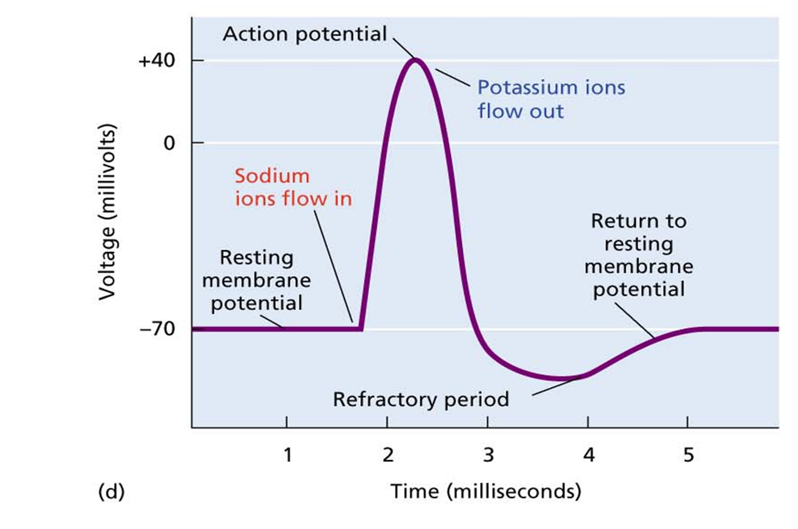
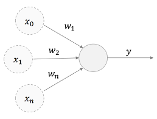
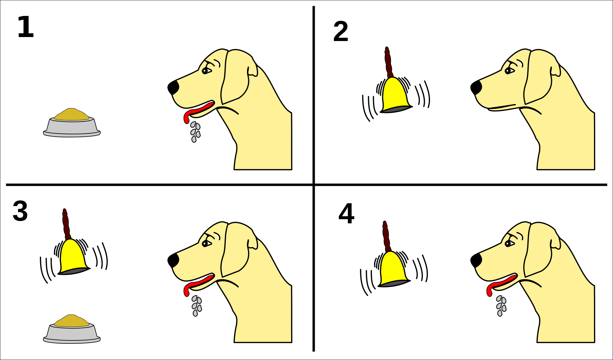
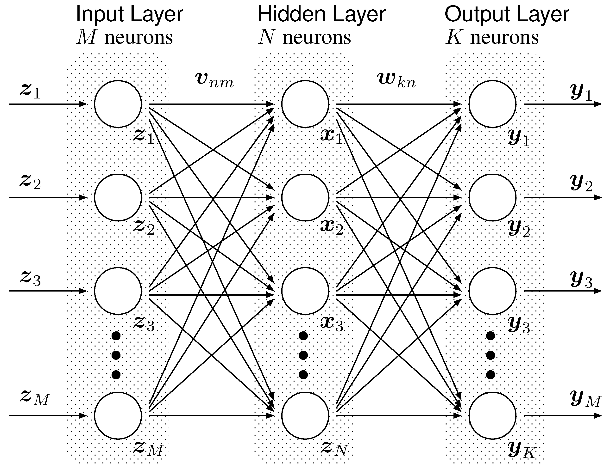

class: center, middle # Neural Network <h3 style="color: darkblue">Tae Geun Kim</h3> --- # Table of Contents -- 1. Brain & Neuron -- 2. Perceptron --- class: center, middle # Brain & Neuron --- ## Neuron <img src="neuron.png" alt="neuron" width="100%"> --- ## Neuron  --- ### Membrane potential -- 1. Potential reaches threshold -- 2. Neuron is activated, sends pulse to synapse by axon -- 3. Neuron is into refactory period -- <p style="text-align: center"></p> -- Q. How to determine weights to each neuron? --- ### Hebb's Rule -- <i>In neuroscience, Hebbian theory is a theory that proposes an explanation for the adaptation of neurons in the brain during the learning process. It describes a basic mechanism for **synaptic plasticity**, where an increase in synaptic efficacy arises from the presynaptic cell's repeated and persistent stimulation of the postsynaptic cell.</i> -- <p style="text-align: center"></p> --- ### McCulloch & Pitts <img src="pitts.png" alt="pitts" width="100%"> --- ### McCulloch & Pitts -- 1. Summation inputs with weights $$h = \sum_{i=1}^n w_i x_i $$ -- 2. Compare `\(h\)` with `\(\theta\)` (threshold) - Activation Function $$ o = g(h) = \begin{cases} 1 & \text{if } h > \theta \\\ 0 & \text{if } h \leq \theta \end{cases}$$ -- <br/> That's it! --- ### McCulloch & Pitts - Limitation -- * Real Neuron does not return single value - output **spike train** -- * Threshold also changes as time goes on -- * Neurons are not sequentially updated - Randomly updated -- * Can't commute positive & negative values - **Excitatory connections & Inhibitory connections** -- * Neuron has feedback loop but McCulloch & Pitts does not have --- class: center, middle # Perceptron --- ## Neural Network -- * Single neuron isn't interesting -- * We need more neurons - **Neural Network** -- Then questions : * How to connect neurons? -- Modified questions : * How should we change the weights and thresholds of the neurons so that the network gets the right answer more often? --- ## Perceptron .center[] --- ## Perceptron -- * Perceptron consists of **Input layer, Hidden layer, Output layer** -- * Each neurons is **independent** -- * Weights form matrix - `\(w_{ij}\)` : weight between `\(i\)`th & `\(j\)`th neuron -- * Activation for each output layer neurons -- * If neuron's output is not answer, then control weights <br/> -- Q. How to control weights? --- ## Perceptron -- * If a neuron which should be activated is deactivated then it means small weighted and vice versa -- * In equation : $$ \Delta w_{ik} = -(y_k - t_k) \times x_i $$ -- * More General : $$ w\_{ij} ~ \leftarrow w\_{ij} ~ - \eta(y\_j - t\_j) \cdot x\_i$$ -- <br/> ⚝ `\(\eta\)` : Learning Rate (Most of case : `\(0.1 < \eta < 0.4\)` ) --- ## Perceptron -- ### Bias Node -- * If input values are zero, then we can't update our weights -- * To prevent this situation, we should put at least one fixed node -- `\(\rightarrow\)` **Bias Node** -- * In our slide, we use `\(-1\)` as fixed input value of Bias node --- ## Perceptron - Algorithm -- * Initialization : Set all weights as random numbers -- * Training : Repeat `\(T\)` times -- * Calculate activation : $$ y\_j = g\left(\sum\_{i=0}^m w\_{ij} x\_i\right) = \begin{cases} 1 & \text{if } \sum w\_{ij}x\_i > 0 \\\ 0 & \text{if } \sum w\_{ij}x\_i \leq 0 \end{cases}$$ -- * Update weights : $$ w\_{ij} \leftarrow w\_{ij} - \eta(y\_j - t\_j) \cdot x\_i$$ -- * Recall : Calculate last activation $$ y\_j = g\left(\sum\_{i=0}^m w\_{ij} x\_i\right) = \begin{cases} 1 & \text{if } \sum w\_{ij}x\_i > 0 \\\ 0 & \text{if } \sum w\_{ij}x\_i \leq 0 \end{cases}$$ --- ## Perceptron - Example (OR) -- <table id="tab01" align="center"> <tr> <th>\(In_1\)</th> <th>\(In_2\)</th> <th>\(t\)</th> </tr> <tr> <td>0</td> <td>0</td> <td>0</td> </tr> <tr> <td>0</td> <td>1</td> <td>1</td> </tr> <tr> <td>1</td> <td>0</td> <td>1</td> </tr> <tr> <td>1</td> <td>1</td> <td>1</td> </tr> </table> -- * `\( x_1 = In_1,~ x_2 = In_2, ~ y = t\)` -- * Initial Condition: `\(w_0 = -0.05, ~ w_1 = -0.02 ~ w_2 = 0.02\)` -- <br/> Q. Let's apply Perceptron algorithm once with `\(\eta = 0.25\)` --- class: center, middle ## Homework #1 <p style="font-size:24px">Implement perceptron in your language and apply OR example</p> <br/> --- ## Hint - R Code Dimension of objects -- * input : N x m -- * output : N x n -- * weight : m x n -- * answer : N x n --- ## Hint - R Code Weight Initialization ```R weights_init <- function(m, n) { w <- runif(m, -1, 1) if(n==1) { return(w) # m x 1 matrix } else { for (i in 2:n) { w <- cbind(w, runif(m, -1, 1)) } return(w) } } ``` --- ## Hint - R Code Activation ```R activation <- function(s) { ans <- if(s > 0) 1 else 0 return(ans) } ``` -- Output ```R output <- function(weights, input) { s <- input %*% weights g <- Vectorize(activation) y <- g(s) return(y) } ``` --- ## Hint - R Code Update Weight ```R update <- function(weights, input, answer, eta = 0.25) { y <- output(weights, input) w <- weights - eta * (t(x) %*% (y - answer)) return(w) } ``` -- Training ```R train <- function(weights, input, answer, eta = 0.25, times) { w <- weights for (i in 1:(times - 1)) { w <- update(w, input, answer, eta) print(w) } return(output(w, input)) } ``` --- ## Hint - R Code Example - OR ```R w <- weights_init(3,1) x <- matrix(0, 4, 3) x[,1] = -1 # Bias x[,2] = c(0,1,0,1) x[,3] = c(0,0,1,1) t <- c(0,1,1,1) y <- train(w, x, t, 0.25, 10) print(y) ```